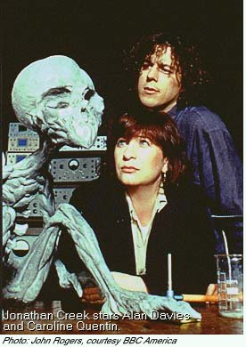

The BBC's Jonathan Creek has been run on some PBS stations (see "Does Your PBS Station Show...?") in the US and is now showing on BBC America. Starring comedian Alan Davies and Caroline Quentin (late of the British version of Men Behaving Badly), this comedy/mystery series features familiar guest stars including Rik Mayall (The Young Ones), Anthony Stewart Head (Buffy The Vampire Slayer), and Colin Baker and Peter Davison (both Doctor Who veterans). Exquisitely written by David Renwick, the writer/creator of One Foot In The Grave, Davies plays the title character, a brilliant, witty, eccentric inventor who devises illusions for his magician boss. Quentin plays Maddy Magellan, a novelist who gets involved with solving crimes and finds herself first competing with, but then being attracted to, Creek who manages to work out whodunit and howtheydunnit every time. A clever, funny series with great chemistry from the leads. Some first season episodes were edited for broadcast on PBS. Read why.Next page > Jonathan Creek Episode Guide > Page 1, 2
The Award-winning Father Ted (official Channel 4 site; The Craggy Island Examiner is another excellent fan site) ran for three seasons on Britain's Channel 4, was shown on the CBC in Canada, and is now also on BBC America. This comedy about three nearly-defrocked Catholic priests living on a remote island off of Ireland was one of the best and freshest comedies in the 1990s. Father Ted (Dermot Morgan) is the most "normal," though prone to temptation through opportunism; Father Jack is a cranky drunk and spends most of his time asleep in a chair; and young Father Dougal brings a new definition to the word "dim." An early episode opens with a visiting Cuban priest who speaks Spanish but is overdubbed like a BBC newscast. It only gets stranger. Ordered by the Bishop to protest a "sacrilegious" movie opening in town results in it becoming a huge hit (after the priests check out the movie for themselves, of course). Everyone else on the island is just as weird, including a married couple on the verge of mutual homicide who, in the presence of the Fathers, give off the impression of martial bliss. Very funny, but prone to occasional crudeness and like the best of Monty Python, certain to offend anyone who takes religion too seriously.